이 문서는 My Photo Work 를 처음 쓰는 분이 직접 따라 하면서 익히도록 만든 연습 과정입니다. 각 단계는 몇 분이면 끝나고, 앞 단계에서 만든 결과를 다음 단계에서 이어서 씁니다. 기능 하나하나의 자세한 설명은 도움말 → 사용자 설명서 에 있습니다.
화면 안에서 짚어 주는 안내를 원하면 도움말 → 튜토리얼 을 실행하세요. 이 문서는 그 안내를 글로 옮긴 것입니다.
실수해도 괜찮습니다. Ctrl+Z 로 되돌리고 Ctrl+Y 로 다시 실행합니다.
이 창의 위쪽에서 글꼴, 글자 크기, 언어를 바꾸고 인쇄 로 종이에 뽑을 수 있습니다.
1단계 — 시작 화면에서 샘플 열기
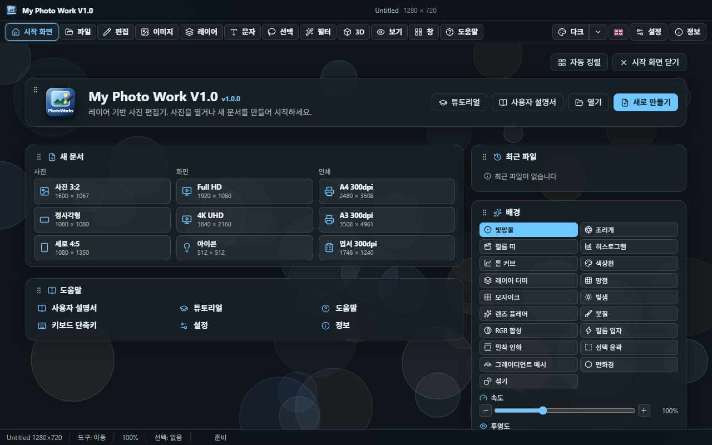
시작 화면
메뉴 막대 맨 왼쪽의 홈 단추를 누르면 시작 화면이 나옵니다.
샘플 그림 카드에서 호수와 하늘 을 누릅니다. 새 문서로 열리고 캔버스 위에 탭이 하나 생깁니다.
같은 방법으로 모나리자 (다빈치) 도 엽니다. 탭이 두 개가 되면 탭을 눌러 두 그림을 오가 보세요.
탭이 많아져 한 줄에 다 보이지 않으면 탭 줄 오른쪽 끝의 <> 로 넘깁니다.
그림이 없는 부분은 흰색과 회색 체크무늬로 보입니다. 투명하다는 뜻입니다.
2단계 — 화면 둘러보기
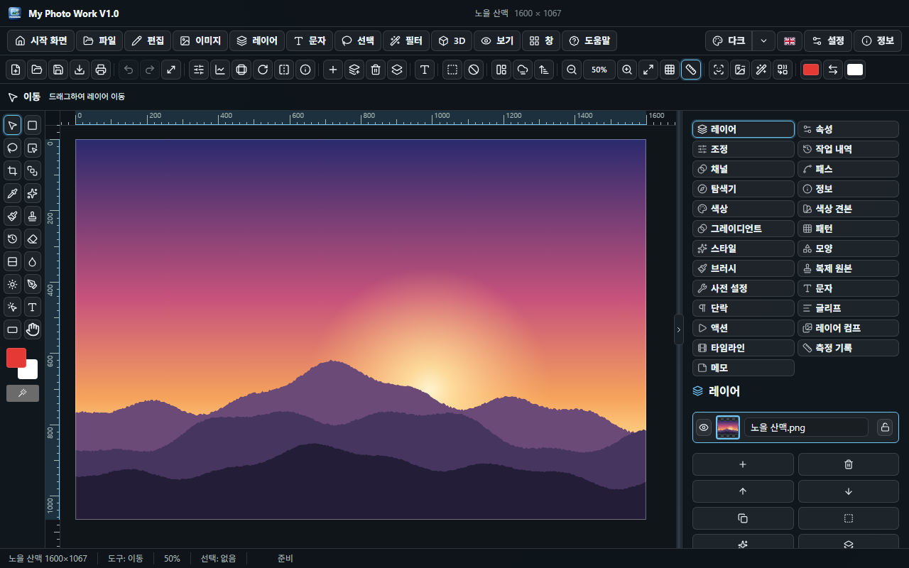
편집 화면
메뉴 막대: 파일, 편집, 이미지, 레이어, 문자, 선택, 필터, 3D, 보기, 창, 도움말. 오른쪽 끝에 하단 패널·우측 패널 접기 단추, 테마, 언어, 설정, 정보가 있습니다.
툴바: 자주 쓰는 명령. 축소와 확대 단추 사이의 숫자가 확대 비율입니다.
도구 막대(왼쪽): 도구를 고르면 그 도구의 설정이 탭 아래 옵션 막대 에 나옵니다. 설정할 것이 없는 도구는 옵션 막대가 나오지 않습니다.
작업 패널(오른쪽): 레이어, 속성, 조정 같은 패널을 탭으로 고릅니다. 제목 표시줄 오른쪽 단추로 접고 펼 수 있습니다.
하단 패널: 문제점, 오류, 로그. 각 탭에서 내용 복사 와 지우기 를 쓸 수 있습니다.
캔버스 오른쪽과 아래의 스크롤 막대 로 그림을 움직이거나, 스페이스바를 누른 채 끌어도 됩니다.
3단계 — 레이어 만들기
레이어 → 새 레이어(Ctrl+Shift+N)를 누릅니다. 작업 패널의 레이어 탭에 새 레이어가 맨 위에 생깁니다.
레이어 이름을 두 번 눌러 연습 으로 바꿉니다.
눈 모양 단추로 레이어를 숨겼다가 다시 보이게 해 봅니다. 숨긴 레이어가 있으면 하단 패널 문제점 에 표시됩니다.
불투명도 슬라이더의 − 와 + 단추로 값을 5씩 바꿔 봅니다.
4단계 — 선택하기
도구 막대에서 사각형 선택(M)을 고르고 하늘 부분을 끌어 사각형으로 선택합니다.
선택 → 선택 해제 로 지운 뒤, 이번에는 선택 → 피사체 선택 을 눌러 봅니다. 그림에서 주된 대상을 자동으로 고릅니다.
선택 → 반전 으로 선택을 뒤집으면 배경만 선택됩니다.
선택 영역이 있으면 다음 단계의 조정과 필터는 그 안에서만 적용됩니다.
5단계 — 색 조정하기
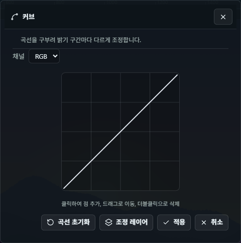
커브 창
이미지 → 커브(Ctrl+M)를 엽니다. 곡선 가운데를 조금 위로 끌면 그림이 밝아집니다.
이미지 → 색조/채도(Ctrl+U)에서 채도 를 올려 하늘을 더 파랗게 만들어 봅니다.
원래대로 두고 싶으면 작업 패널의 조정 탭에서 같은 조정을 조정 레이어 로 추가하세요. 나중에 언제든 값을 바꿀 수 있습니다.
6단계 — 필터 써 보기
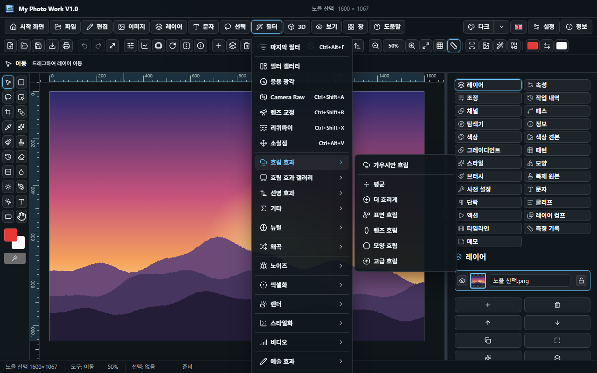
필터 메뉴
필터 메뉴를 열고 흐림 ▸ 가우시안 흐림 을 고릅니다.
반경 을 바꾸면 미리 보기가 바로 바뀝니다. 적용 을 누릅니다.
필터 → 필터 갤러리 에서는 여러 예술 효과를 그림으로 보면서 고를 수 있습니다.
7단계 — 그리기와 도장
브러시(B)를 고르고 옵션 막대에서 크기와 경도를 정한 뒤 연습 레이어에 그려 봅니다.
패턴 도장(S 를 두 번)을 고르고 작업 패널 패턴 탭에서 무늬를 하나 고른 뒤 칠합니다.
복제 도장(S)은 Alt 를 누른 채 원본을 찍고, 다른 곳을 칠하면 그 부분이 복사됩니다.
잠긴 레이어에는 그릴 수 없습니다. 그러면 안내 창이 한 번 뜨고, 하단 패널 문제점 에도 남습니다.
8단계 — 문자 넣기
가로 문자(T)를 고르고 그림 위를 클릭한 뒤 안녕하세요 를 입력합니다.
옵션 막대에서 글꼴, 크기, 색을 바꿉니다.
이동 도구(V)로 돌아가 문자 레이어를 끌어 자리를 옮깁니다.
9단계 — 저장하고 내보내기
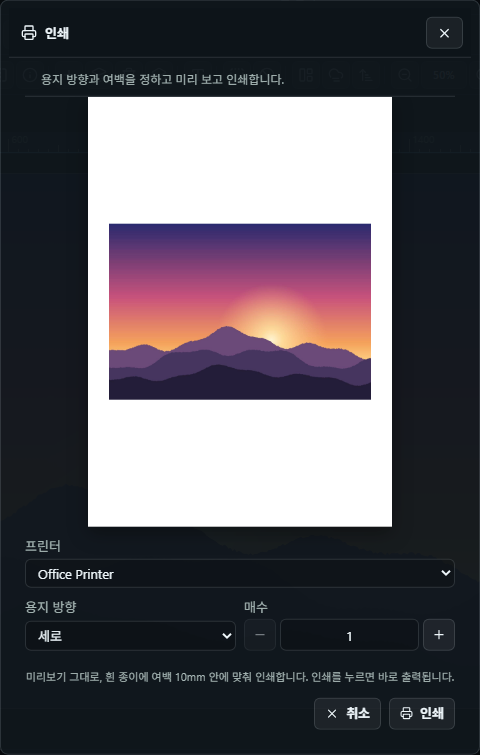
인쇄 창
파일 → 저장(Ctrl+S)은 레이어를 그대로 담은 .mpw 프로젝트로 저장합니다.
파일 → 내보내기 는 PNG·JPEG·WebP 같은 그림 파일로 저장합니다. 투명한 부분을 지키려면 PNG 를 고르세요.
파일 → 인쇄(Ctrl+P)에서 용지와 크기를 정해 인쇄합니다.
10단계 — 문제가 생겼을 때
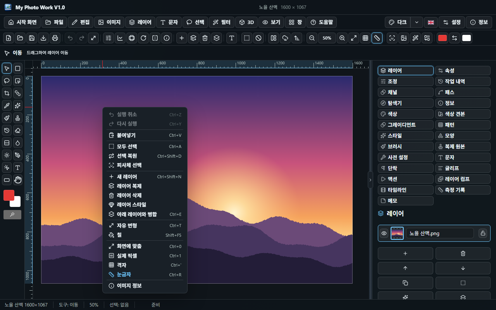
오른쪽 단추 메뉴
하단 패널의 오류 탭에 무엇이 잘못되었는지 남습니다. 내용 복사 로 복사해 문의할 때 붙여 넣으세요.
로그 탭에는 실행한 명령, 연 파일, 고른 도구가 시간 순서로 남습니다.
그림 위에서 마우스 오른쪽 단추를 누르면 자주 쓰는 명령이 메뉴로 나옵니다.
더 알고 싶은 기능은 도움말 → 사용자 설명서 에서 찾아보세요.
마치며
이제 사진을 열고, 레이어를 나누고, 선택한 부분만 고치고, 결과를 저장할 수 있습니다. 테마 단추로 화면 색을 바꾸고, 설정 에서 시작 화면과 도구 기본값을 내 손에 맞게 바꿔 보세요.
Before you start
This document is a hands-on course for people new to My Photo Work: you follow along in the app as you read. Each step takes a few minutes and builds on the result of the one before. Every feature is described in full in Help → User Guide.
For a tour that points at the screen itself, run Help → Tutorial. This document is that tour written down.
Mistakes are fine: Ctrl+Z undoes and Ctrl+Y redoes.
At the top of this window you can change the font, the text size and the language, and Print it.
Step 1 — Open a sample from the start screen
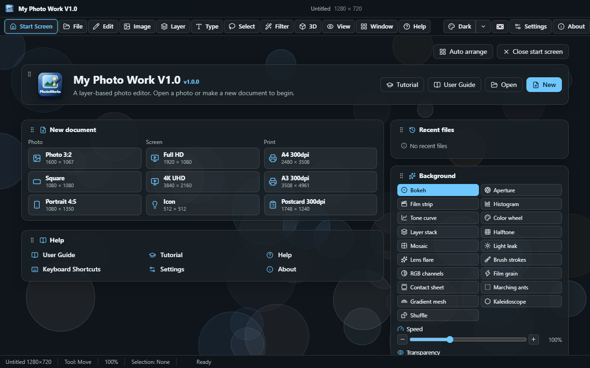
The start screen
Press Home, the first button on the menu bar, to show the start screen.
In the Sample pictures card, click Lake and sky. It opens as a new document, with a tab above the canvas.
Open Mona Lisa (Leonardo) the same way. With two tabs, click them to switch between the pictures.
When there are more tabs than fit on the row, use < and > at its right end.
Where there is no picture the canvas shows a white and grey checkerboard: that area is transparent.
Step 2 — Find your way around
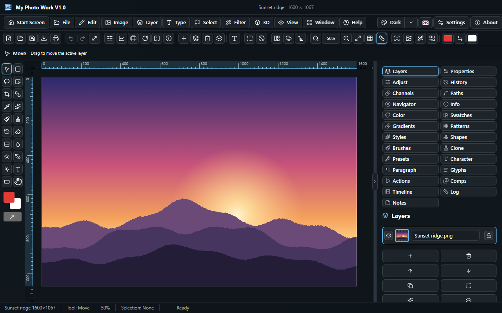
The editing screen
Menu bar: File, Edit, Image, Layer, Type, Select, Filter, 3D, View, Window, Help. At its right end: the bottom and right panel buttons, the theme, the language, Settings and About.
Toolbar: the commands used most. The number between zoom out and zoom in is the zoom.
Tools (left): the chosen tool's settings appear in the options bar under the tabs. A tool with nothing to set shows no options bar.
Work Panels (right): Layers, Properties, Adjustments and more, chosen by tab. The button at the right of its title bar folds and unfolds it.
Bottom panel: Problems, Errors and Log, each with Copy and Clear.
The scrollbars along the right and the bottom of the canvas move the picture; so does dragging with the space bar held.
Step 3 — Make a layer
Choose Layer → New Layer (Ctrl+Shift+N). The new layer appears at the top of the Layers tab in the Work Panels.
Double-click its name and call it Practice.
Hide the layer with the eye button and show it again. While a layer is hidden, the bottom panel's Problems says so.
Use the − and + buttons of the Opacity slider to change it in steps of 5.
Step 4 — Select
Choose the Rectangular Marquee (M) and drag a rectangle over the sky.
Clear it with Select → Deselect, then try Select → Select Subject: the main subject is picked out for you.
Select → Inverse turns the selection around, so only the background is selected.
While there is a selection, the adjustments and filters in the next steps change only what is inside it.
Step 5 — Adjust the colours
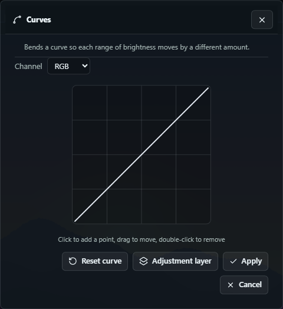
The Curves window
Open Image → Curves (Ctrl+M). Drag the middle of the curve up a little and the picture brightens.
In Image → Hue/Saturation (Ctrl+U) raise Saturation to make the sky bluer.
To keep the original untouched, add the same adjustment from the Adjustments tab as an adjustment layer; its values can be changed at any time.
Step 6 — Try a filter
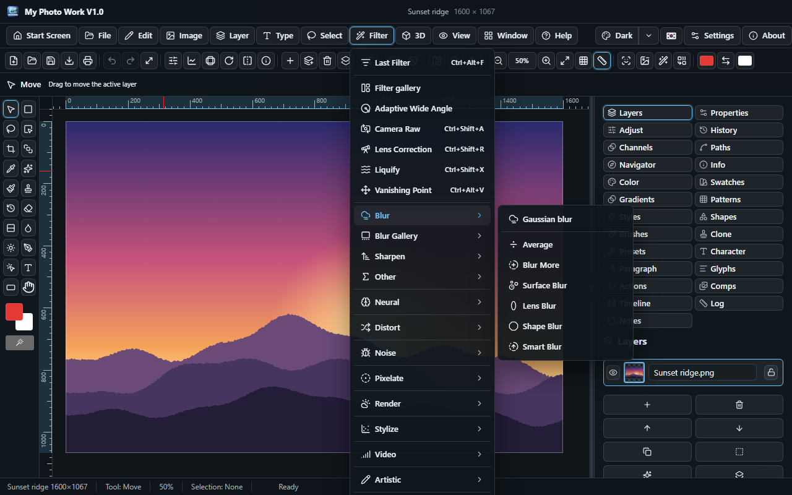
The Filter menu
Open the Filter menu and choose Blur ▸ Gaussian Blur.
Change the Radius and the preview follows at once. Press Apply.
Filter → Filter Gallery lets you choose among the artistic effects by their pictures.
Step 7 — Paint and stamp
Choose the Brush (B), set its size and hardness in the options bar, and paint on the Practice layer.
Choose the Pattern Stamp (S twice), pick a pattern in the Patterns tab of the Work Panels, and paint with it.
With the Clone Stamp (S), Alt-click a source, then paint elsewhere to copy it there.
A locked layer cannot be painted on. You are told so once, and the bottom panel's Problems keeps the note.
Step 8 — Add text
Choose Horizontal Type (T), click the picture and type Hello.
Change the font, size and colour in the options bar.
Go back to the Move tool (V) and drag the text layer into place.
Step 9 — Save and export
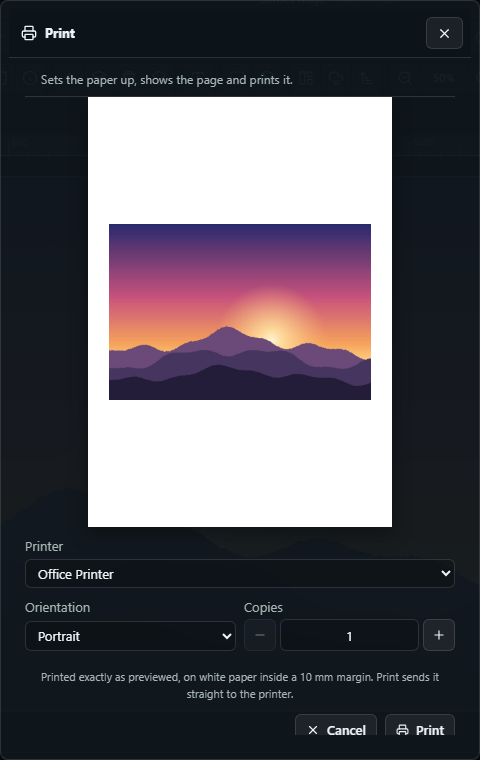
The Print window
File → Save (Ctrl+S) saves a .mpw project with all its layers.
File → Export writes a picture file such as PNG, JPEG or WebP. Choose PNG to keep the transparent areas.
File → Print (Ctrl+P) lets you set the paper and the size and print.
Step 10 — When something goes wrong
The right-click menu
The bottom panel's Errors tab records what went wrong. Copy it and paste it into a report.
The Log tab lists the commands you ran, the files you opened and the tools you chose, in order.
Right-click the picture for a menu of the commands used most.
Anything else is in Help → User Guide.
Where next
You can now open a photo, split it into layers, change only the part you select, and save the result. Change the colours of the screen with the theme button, and make the start screen and the tool defaults your own in Settings.